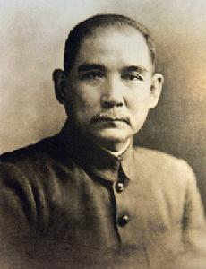

 孙中山，本名孙文，谱名德明，字载之，号日新，又号逸仙，幼名帝象。中国近代民主主义革命先驱，中华民国和中国国民党创始人，三民主义的倡导者。首举彻底反封建的旗帜，“起共和而终帝制”。1905年成立中国同盟会。1911年辛亥革命后被推举为中华民国临时大总统。1929年6月1日，根据其生前遗愿，陵墓永久迁葬于南京钟山中山陵。1940年，国民政府通令全国，尊称其为“中华民国国父”。他是一位在海峡两岸都受到敬重的革命家，中华民国尊其为国父、中国国民党尊其为总理，毛泽东和中国共产党称孙中山为“中国近代民主革命的伟大先行者”。
|
|
| 祖籍 | 入赣先祖， 孙誗，唐末东平侯，原籍汴州 陈留(今河南 开封) |
|
前辈
|
祖父：孙敬贤（1789年－1850年）
祖母：黄芝兰（1792年－1869年）
父亲：
孙达成（1813年－1888年）
母亲：杨可卿（1852年－1910年）
|
|
兄弟姊妹
|
长兄：孙德彰(1854～1915年)
姊：孙妙茜(1863－1955)
妹：
孙秋绮(1871年~1912年)
另有一兄：（孙德佑）五岁早夭
另有一姐：（
孙金星）亦早夭
|
|
妻妾
|
原配：
卢慕贞（1867年－1952年）
日本籍妻子：
大月薰（1888-1970年），1903年被孙中山迎娶
[31]
妾：
陈粹芬(1873-1960年)，1893年与孙中山同居
末任妻：
宋庆龄（1893年－1981年），1915年10月25日与孙中山在日本结婚。
|
|
子女
|
儿子：
孙科（1891年10月20日—1973年9月20日）
长女：
孙娫（1894年3月31日—1913年6月25日）
次女：
孙婉（1896年11月12日—1979年6月3日）
|
|
孙子
|
长孙：
孙治平(1913年11月15日－2005年4月6日)
次孙：
孙治强(1915-2001)
|
|
孙女
|
长孙女：
孙穗英(1922年出生)
次孙女：
孙穗华(1925年出生)
三孙女：
孙穗芳(1935年出生)
四孙女：
孙穗芬(1938年—2011年1月29日)
[32]
|
|
外孙
|
王弘之（孙婉与王伯秋之子）
戴永丰（孙婉与戴恩赛之子）
|
|
外孙女
|
王蕙（孙婉与王伯秋之女）
|